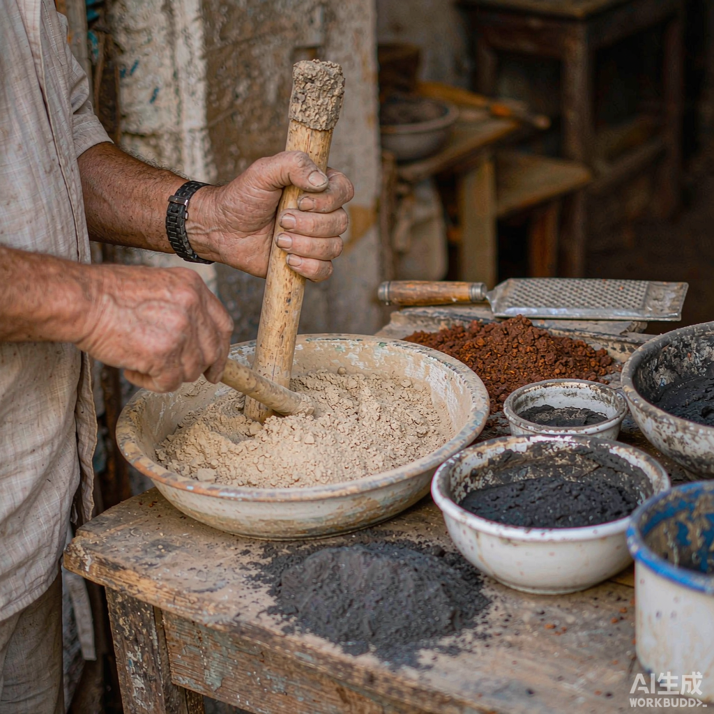
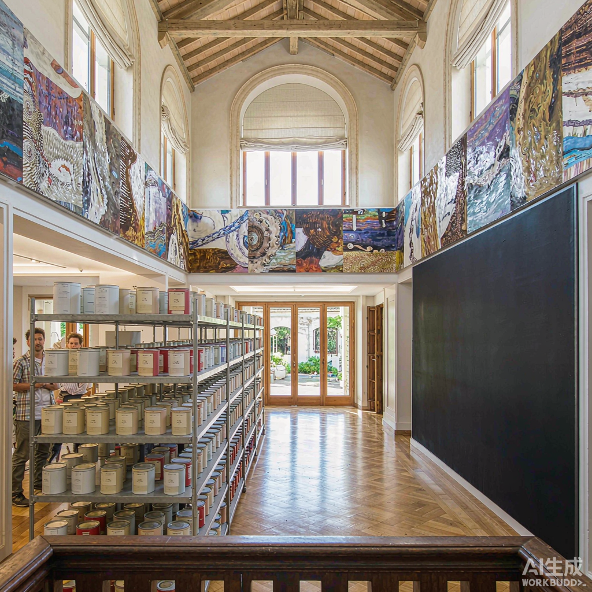
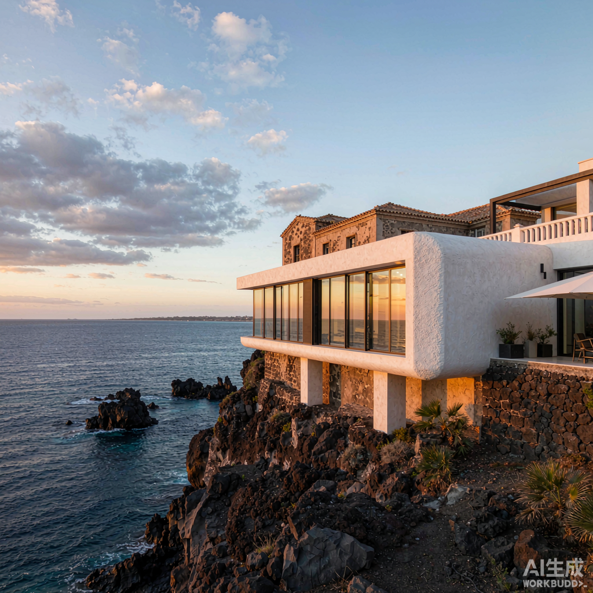

1985
Fondazione a Palermo
Il maestro d'arte italiano Pino Daeni fonda il marchio USLION a Palermo, capoluogo della Sicilia. Grazie alla ricca disponibilità locale di materie prime minerali quali calce naturale, roccia vulcanica e pietra leccese, il brand si specializza nella produzione, nella ricerca e sviluppo di pitture decorative e nella tecnologia di applicazione, definendo il posizionamento premium di «tatto originale + estetica visiva».

2009
Stabilimento dedicato e Villa Belluccelli
Viene realizzato lo stabilimento dedicato alle pitture decorative USLION, chiudendo il ciclo completo dal design alla produzione. Il marchio partecipa inoltre al progetto di decorazione dell'atrio e degli spazi d'arte di Villa Belluccelli, applicando le pitture decorative a spazi residenziali di lusso e affermando il proprio ruolo di riferimento nel settore dell'architettura d'eccellenza.

2015
Espansione in Europa e nei mercati internazionali
Il marchio si espande ufficialmente in Europa e in altri mercati internazionali, avviando una strategia globale; i prodotti entrano in residenze premium e spazi commerciali di numerosi paesi.
2018 – 2025
Ristrutturazione di Villa Lava
Partecipazione approfondita alla ristrutturazione di Villa Lava — progetto che fonde il restauro di una storica casetta dei pescatori degli anni '900 con nuove addizioni panoramiche sul mare, completato nel 2025. Le pitture decorative USLION, con la loro unica espressività materica, diventano il medium chiave che collega storia e modernità, natura e architettura.

13 ottobre 2020
Ingresso nel mercato cinese
Viene ufficialmente costituita la «Hangzhou Buleide New Materials Co., Ltd.», agente generale per la Cina, che firma l'importazione delle pitture decorative USLION 美洲狮 (Puma) dall'Italia, avviando la strategia di penetrazione del mercato cinese.
Marzo 2021
Nasce la Business School
Nasce la Hangzhou Buleide Business School, istituto professionale di formazione sulle pitture decorative, impegnato nella coltivazione di talenti del settore e nell'output standardizzato della tecnologia.
6 agosto 2021
Riconoscimento di settore
USLION ottiene il riconoscimento di «Membro della Filiale Rivestimenti Edilizi dell'Associazione Cinese dei Materiali per Decorazione delle Pareti», ottenendo il riconoscimento delle autorità di settore.
2022
Rapida crescita in Cina
Le vendite nella regione cinese superano la soglia dei 10 milioni di yuan, con una rapida crescita dell'accettazione di mercato. Il numero di flagship store nella regione supera 150, la rete di canali si estende a tutto campo e l'influenza del marchio continua a espandersi. Nello stesso anno, il brand entra nel parco industriale Inorganic Coating Valley.